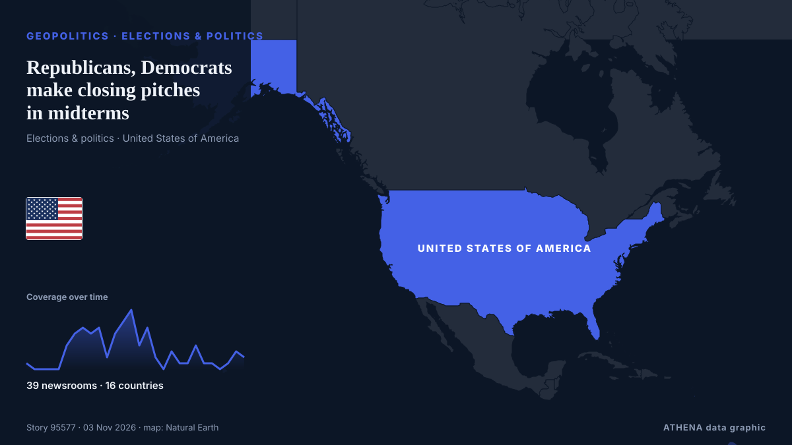

Republicans, Democrats make closing pitches in midterms

Democrats have sought to contain a rift in Michigan's US Senate race after one of their own crossed party lines to endorse the Republican. de RTÉ News
Informado de forma independiente por 39 medios de 16 países desde el 1 nov; el primero fue Mainichi (English); la cobertura sigue extendiéndose. ATHENA califica el riesgo como moderado (2.4/10), sobre todo por la gravedad del daño descrito y su alcance geográfico y sectorial. La confianza es del 89 % (alta): lo corroboran 39 medios independientes, con una fiabilidad media de las fuentes del 73 %. Medios por país: Estados Unidos (12), Catar (5), Turquía (3). Cobertura: del 1 nov al 2 nov, 24 horas.
Por qué importa: Los hechos de seguridad y diplomacia pueden alterar alianzas, comercio y mercados mucho más allá de los países implicados.
Qué ha cambiado: 23 informaciones nuevas de 17 redacciones en las 24 horas hasta el 3 nov.
Primer titular: Michigan Democrat's endorsement of Republican ruffles critical Senate race
Los titulares se muestran en inglés, tal como se publicaron.
De un vistazo
Seleccionado, puntuado y redactado por la metodología publicada de ATHENA. Ningún editor interviene en eventos concretos. Cómo se elabora ›
| 01 Nov 09:00 UTC | 1 |
|---|---|
| 01 Nov 11:00 UTC | 0 |
| 01 Nov 13:00 UTC | 0 |
| 01 Nov 15:00 UTC | 0 |
| 01 Nov 17:00 UTC | 0 |
| 01 Nov 19:00 UTC | 4 |
| 01 Nov 21:00 UTC | 6 |
| 01 Nov 23:00 UTC | 7 |
| 02 Nov 01:00 UTC | 6 |
| 02 Nov 03:00 UTC | 7 |
| 02 Nov 05:00 UTC | 2 |
| 02 Nov 07:00 UTC | 6 |
| 02 Nov 09:00 UTC | 8 |
| 02 Nov 11:00 UTC | 10 |
| 02 Nov 13:00 UTC | 4 |
| 02 Nov 15:00 UTC | 7 |
| 02 Nov 17:00 UTC | 2 |
| 02 Nov 19:00 UTC | 0 |
| 02 Nov 21:00 UTC | 3 |
| 02 Nov 23:00 UTC | 1 |
| 03 Nov 01:00 UTC | 1 |
| 03 Nov 03:00 UTC | 4 |
| 03 Nov 05:00 UTC | 1 |
| 03 Nov 07:00 UTC | 1 |
| 03 Nov 09:00 UTC | 0 |
| 03 Nov 11:00 UTC | 1 |
| 03 Nov 13:00 UTC | 3 |
| 03 Nov 15:00 UTC | 2 |
| 02 Nov 03:07 UTC | 0.0 |
|---|---|
| 02 Nov 05:02 UTC | 1.7 |
| 02 Nov 08:41 UTC | 2.6 |
| 02 Nov 08:57 UTC | 1.4 |
| 03 Nov 15:41 UTC | 2.4 |
Por qué estas cifras
Importancia
Riesgo
Confianza
La cobertura: quién informó y cuándo
titular tal como se publicó · abre el original- Mainichi (English) · JapónRepublicans on defense in Texas while Democrats in Michigan can't get on the same page
- The Hill · Estados UnidosSchumer calls Stevens's Rogers endorsement 'a despicable betrayal'
- The Hill · Estados UnidosTrump commends Stevens's 'bravery' for endorsing Rogers
- ABC News Australia · Australia'Despicable betrayal': Democrat backs GOP candidate in key midterms race
- The Hill · Estados UnidosRNC says 'Michigan should take notice' of Stevens endorsing Rogers
- Al Jazeera English · CatarWhy did Democrat Haley Stevens just endorse a Republican for US Senate?
- Al Jazeera English · CatarDemocrat Haley Stevens heckled as she backs El-Sayed rival
- The Hill · Estados UnidosTrump says he would ‘love to have’ Haley Stevens join Republican Party
- The Jerusalem Post · IsraelPro-Israel Democrat Haley Stevens endorses Republican Rogers in Michigan US Senate race
- TRT World · TurquíaEl-Sayed brushes off former rival's Republican endorsement as Democrats rally behind him
- The New Arab · INTHaley Stevens endorses Republican candidate in Michigan race
- Sydney Morning Herald · Australia‘Despicable betrayal’ reopens a Democratic Party wound that won’t heal
- Anadolu Agency (English) · TurquíaUS Rep. Haley Stevens under scrutiny after endorsing Republican candidate in Michigan Senate race
- The Independent · Reino UnidoDemocrats rocked by ‘despicable betrayal’ on eve of midterms vote
- The Straits Times · SingapurDemocratic divisions shake up key Michigan Senate race
- The National · Emiratos Árabes UnidosEl-Sayed and Rogers trade personal attacks in bitter Michigan Senate debate
- The Guardian · Reino UnidoTrump launches racist diatribe against Abdul El-Sayed at Iowa rally
- CNA (Channel NewsAsia) · SingapurDemocratic divisions shake up key Michigan Senate race
- The Hill · Estados UnidosNewsom on Stevens: Obviously it's 'sub-optimal'
- Al Jazeera English · CatarTrump invites Michigan Democrat Stevens to join the Republican Party
- The Hill · Estados UnidosDemocrats blast Stevens over Michigan 'betrayal'
- The Jerusalem Post · IsraelSome Michigan Jewish Democrats disavow Stevens over endorsement of El-Sayed’s GOP rival
- Livemint · IndiaMichigan Senate race: Democrat endorses Republican after bitter feud with Abdul El-Sayed | What led to stunning switch?
- Al Jazeera English · CatarEl-Sayed dismisses Stevens’ backing of Republican Senate candidate
- The Hill · Estados UnidosDemocrats edge out Republicans in 7 heated Senate races: NYT polls
- The Daily Star — page reader · BangladésMichigan Democrat's endorsement of Republican ruffles critical Senate race
- The Hill · Estados UnidosStevens defends endorsing Rogers during tense interview
- The Hill · Estados UnidosDingell says Stevens defending Rogers endorsement was 'painful'
- The National Herald · Estados UnidosRepublicans on Defense in Texas While Democrats in Michigan Can’t Get on the Same Page
- RTÉ News · IrlandaRepublicans, Democrats make closing pitches in midterms
- The Straits Times · SingapurMichigan Senate race: Will Haley Stevens spoil the party for Democratic candidate El-Sayed?
- Variety · Estados UnidosHaley Stevens’ Unsettling CNN Interview Proves Why She’s Unfit for Public Office
- Euronews English · FranciaUS midterms: Democrat Haley Stevens backs Republican Mike Rogers in Michigan Senate race
- TheJournal.ie · IrlandaMichigan Democrat makes shock U-turn to back Republican as her party gets Senate poll boost
- France 24 English · FranciaMichigan Democrat's endorsement of Republican ruffles critical Senate race
- Forbes Business · Estados UnidosEl-Sayed Raises $1.2 Million As Some Democrats Seek Haley Stevens’ Expulsion Over GOP Endorsement
- Dawn · PakistánUS midterms: Michigan Democrat's endorsement of Republican ruffles critical Senate race
- France 24 English · FranciaMichigan Democrat stuns party to back Republican candidate in critical Senate race
- Anadolu Agency (English) · TurquíaDemocrats lead in 5 Republican-held Senate races ahead of US midterms: Polls
- Al Jazeera English · CatarUS midterms: 1 day to go – Democrats rally around El-Sayed amid attacks